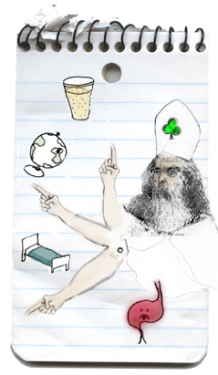
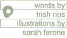

  |
St. Patrick's Day in Chicago brings out the primal being in both the experienced and novice drinker. I find that the line that normally separates the two groups of people on any other day, somehow becomes blurred on St. Pat's. It's like there's a tacit understanding that it's not only OK to act like you're on Spring Break, boozing it up and acting like a complete idiot for the resident sloths that are MTV viewers, but it's actually expected. Yes, Chicagoans on March 17 understand that it is their patriotic duty to convene at several drinking establishments and keep the tradition of unabashed debauchery alive. I understand this ambition. Everyone, myself included, has embraced the role of obnoxious drunk . And in my experienced and professional opinion, it's this type of bacchanalian behavior that makes every St. Pat's reveler an amateur drinker. So I've taken it upon myself to give some unsolicited guidance on how to make the most of St. Pat's, the sacred drinker's holiday, to those that will ultimately be wearing beer goggles. Tips for the Greenhorn When to Go : Well now that depends on your tolerance level. If you don't know your tolerance level by now, you should just stay inside and watch the History of Irish in America on the History Channel. If you consume alcohol at least three times a week, you're probably at the intermediate to advanced level of drinking, so you and your buddies can probably start drinking as soon as the bar doors open, which is normally between 10 and 11 a.m. If you truly are a rookie at this sport, I'd recommend leaving your house no earlier than three in the afternoon. Please know that once you leave your residence, there's no turning back. You won't be in bed – either yours or someone else's – until long after last call. So the later you start drinking, the less idiotic behavior you can reprimand yourself for later. What to Bring : As it is a national holiday, I presume you'll be somewhat in the festive spirit. After all, March 17 does come only once a year. So bring and/or wear anything green or gold or glittery or a combination of the three in the hopes of standing out from all the other idiots that are trying to do the same thing. Stupid gallon hats, boas, midgets posing as leprechauns are fun too , and they're great for conversation starters. Maps : If you need a map, I'm assuming you're either retarded or an out-of-towner. If you fall into neither one of these groups, I recommend you just stay in and watch the History of Irish in America on the History Channel. Photography and Video : A personal choice. If you bring a camera, try to bring a digital one, so you could erase all the photos you deem unfit for anyone's eyes, including your own. However, be wary of misplacing your $450 toy, in which case you'll really hate yourself in the morning. So if you insist on recording your shenanigans for future generations to see and laugh about, your best bet would be to bring a disposable camera. Hopefully, it'll end up lost anyways. Dangers and Annoyances : Pretty much you and your friends, you lush. Emergencies : In case you find yourself in a situation in which you are afraid for your immediate personal safety , you can either scream for help like the deranged lunatic you are, run like hell, fight like hell or call 911 on your cell phone. If you didn't know this, then you don't even deserve to watch the History of Irish in America on the History Channel. You should just stay home and watch MTV. |